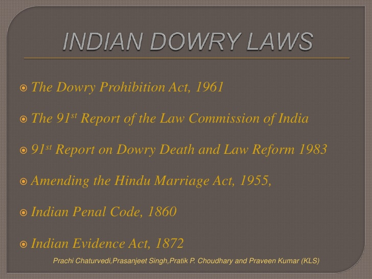

Laws against dowry
 The first all-India legislative enactment relating to dowry to be put on the statute book was the The Dowry Prohibition Act, 1961 and this legislation came into force from July 1, 1961. It marked the beginning of a new legal framework of dowry harassment laws effectively prohibiting the demanding, giving and taking of dowry. Although providing dowry is illegal, it is still common in many parts of India for a husband to seek a dowry from the wife's family and in some cases, this results in a form of extortion and violence against the wife. To further strengthen the anti-dowry law and to stop offences of cruelty by the husband or his relatives against the wife, new provisions were added to the Indian criminal law - section 498A to Indian Penal Code and section 198A to the Criminal Procedure Code in 1983. In 2005, the Protection of Women from Domestic Violence Act was passed, which added an additional layer of protection from dowry harassment.Dowry Prohibition Act, 1961 The Dowry Prohibition Act, 1961 consolidated the anti-dowry laws which had been passed on certain states. This legislation provides for a penalty in section 3 if any person gives, takes or abets giving or receiving of dowry. The punishment could be imprisonment for a term not less than 5 years and a fine not less than ₹15,000 or the value of the dowry received, whichever is higher. Dowry in the Act is defined as any property or valuable security given or agreed to be given in connection with the marriage. The penalty for giving or taking dowry is not applicable in case of presents which are given at the time of marriage without any demand having been made. Similarly, section 4 of the Act provides a the penalty for directly or indirectly demanding dowry and provides for a penalty involving a prison term of not less than 6 months and extendable up to two years along with a fine of ₹10,000. Dowry agreements are void ab initio and if any dowry is received by anyone other than the woman, it should be transferred to the woman. The burden of proving that an offense was not committed is on the persons charged and not on the victim or her family. Under its powers to frame rules for carrying out its objectives under the Act, the government of India has framed the Maintenance of Lists of Presents to the Bride and the Bridegroom Rules, 1985. There are also several state level amendments to the Dowry Prohibition Act.
Criminal statutes - Indian Penal Code, Criminal Procedure Code and Evidence Act The Indian criminal laws were comprehensively amended to include dowry as a punishable offence. Section 304B was added to the Indian Penal Code, 1860 ("IPC"), which made dowry death a specific offence punishable with a minimum sentence of imprisonment for 7 years and a maximum imprisonment for life. It provided that if the death of a woman is caused by burns or bodily injury or occurs in suspicious circumstances within 7 years of her marriage, and there's evidence to show that before her death, she was subjected to cruelty or harassment by her husband or his relative regarding the demand for dowry, then the husband or the relative shall be deemed to have caused her death. Further, section 113B of the Evidence Act, 1872 ("Evidence Act"), creates an additional presumption of dowry death when it is shown that before her death, the woman had been subjected to cruelty on account of dowry demand. Section 304B IPC along with Section 113B of the Evidence Act have enabled the conviction of many who were not caught by the Dowry Prohibition Act, 1961. Section 113A of the Evidence Act provides a similar presumption of abetment of suicide (which is an offense under Section 306 IPC), in case of death of a married woman within a period of seven years of her marriage.
Additionally, the judiciary also includes a murder charge under Section 302 IPC as this allows courts to impose death penalty on perpetrators of the offence. Section 406 IPC, pertaining to offences for the criminal breach of trust, applies in cases of recovery of dowry as it is supposed to be for the benefit of the woman and her heirs.
Further, Section 498A IPC was specifically included in 1983 to protect women from cruelty and harassment. The constitutionality of Section 498A was challenged before the Supreme Court of India on grounds of abuse, on grounds that it gave arbitrary power to the police and the court. However, it was upheld in Sushil Kumar Sharma v. Union of India (2005). The Code of Criminal Procedure, 1973 provides that for the prosecution of offences under Section 498A IPC, the courts can only take cognizance only when it receives a report of the facts from the police or upon a complaint being made by the victim or her family.
Protection of Women from Domestic Violence Act, 2005 Main article: Protection of Women from Domestic Violence Act, 2005 The Protection of Women from Domestic Violence Act, 2005 ("Domestic Violence Act") was passed in order to provide a civil law remedy for the protection of women from domestic violence in India. The Domestic Violence Act encompasses all forms of physical, verbal, emotional, economic and sexual abuse and forms a subset of the anti-dowry laws to the extent it is one of the reasons for domestic violence. Section 3 of the Domestic Violence Act specifically incorporates all forms of harassment, injury and harms inflicted to coerce a woman to meet an unlawful demand for dowry. Some of the common remedies under the Domestic Violence Act include:
- protection orders - prohibiting a person from committing domestic violence
- residence orders - dispossessing such person from a shared household
- custody orders - granting custody of a child
- compensation orders - directing payment of compensation.
International conventions India is a party to several international human rights instruments which provide theoretical remedies to the dowry problems. These international conventions include the Universal Declaration of Human Rights ("UDHR"), International Covenant on Civil and Political Rights ("ICCPR"), the International Covenant on Economic, Social, and Cultural Rights ("ICESCR"), the Convention on the Elimination of All Forms of Discrimination Against Women ("CEDAW"), and the Convention on the Rights of the Child ("CRC"). CEDAW codifies the rights most relevant to the discussion of dowry-related violence: the rights of women. However, there are issues of non-intervention and cultural relativism which impede the use of international law to combat dowry deaths.
Criticisms on the enforcement of dowry laws Although the changes in Indian criminal law reflects a serious effort by legislators to put an end to dowry-related crimes, and although they have been in effect for many years now, they have been largely criticised as being ineffective. Despite the Indian government's efforts, the practice of dowry deaths and murders continues to take place unchecked in many parts of the country and this has further added to the concerns of enforcement. There is criticism by women's groups that India's dowry harassment laws are ineffective because the statutes are too vague, the police and the courts do not enforce the laws and social mores keep women subservient and docile, giving them a subordinate status in the society. Further, many women are afraid to implicate their husbands in a dowry crime simply because the Indian society is viewed as having conditioned women to anticipate or expect abuse and in some sense eventually, endure it.While the laws give great powers, they are not effectively enforced by the police or by courts. It can take up to 10 years for a case to go to court and even once in court, husbands and in-laws end up getting away with extortion or even murder because the women and their families cannot prove 'beyond reasonable doubt' that they are the victims of such crimes, as there are rarely any outside witnesses. Moreover, when deaths occur through bride burning, evidence itself is usually lost in flames.
Criticisms on the abuse of dowry laws There is growing criticism that the dowry laws are often being misused, particularly section 498A IPC which is observed by many in India as being prone to misuse because of mechanical arrests by the police. According to the National Crime Records Bureau statistics, in 2012, nearly 200,000 people including 47,951 women, were arrested in regard to dowry offences. However, only 15% of the accused were convicted. According to Shonee Kapoor, to minimize the misuse of such laws, false dowry complaints should be punished.
Section 498A IPC was challenged but upheld by the Supreme Court of India in 2005. In 2010, the Supreme Court lamented about the possible misuse of anti-dowry laws in Preeti Gupta & Another v. State of Jharkhand & Another and recommended a detailed investigation. Based on the Supreme Court's observations, the Indian parliament set up a committee headed by Bhagat Singh Koshyari. In July 2014, in the case of Arnesh Kumar v. State of Bihar & Anr., a two-judge bench of the Supreme Court reviewed the enforcement of section 41(1)(A) of CrPC which instructs state of following certain procedure before arrest, and went on to observe that the 498A had become a powerful weapon in the hands of disgruntled wives where innocent people were arrested without any evidence due to non-bailable and cognizable nature of the law. The decision received criticism from feminists because it weakened the negotiating power of women. Others welcomed the decision as landmark judgment to uphold the human rights of innocent people.
On April 19, 2015, the Indian government sought to introduce a bill to amend Section 498A IPC based on the suggestions of the Law Commission and Justice Malimath committee on reforms of criminal justice. News reports indicate that the proposed amendment will make the offence compoundable and this would facilitate couples to settle their disputes.